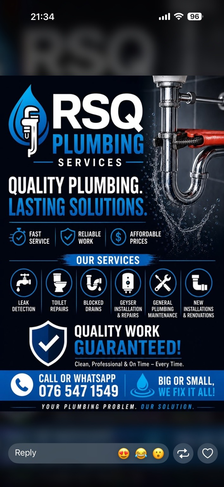

🚰
Leak detection
Tracing and repairing visible or hidden plumbing leaks before they cause further damage.
Fast service • Reliable work • Affordable prices
From small leaks to complete installations and renovations, RSQ Plumbing Services delivers clean, professional and dependable workmanship.
Our services
Core services advertised by RSQ Plumbing Services.
Tracing and repairing visible or hidden plumbing leaks before they cause further damage.
Repairs for leaking, blocked, running or poorly flushing toilets and related fittings.
Clearing blocked drains, waste pipes and troublesome plumbing lines.
Geyser installation, fault finding and repairs for dependable hot-water supply.
Routine plumbing maintenance, fittings, replacements and preventative repair work.
Plumbing for upgrades, extensions, kitchens, bathrooms and new installation projects.
Why choose RSQ
Reliable workmanship, fair pricing and practical plumbing solutions that last.
Responsive assistance when plumbing problems cannot wait.
Professional attention to detail and dependable repairs.
Clear, practical solutions focused on value.

About RSQ Plumbing
RSQ Plumbing Services provides leak detection, toilet repairs, blocked drain assistance, geyser work, general maintenance, and new installations or renovations.
A street address and email address were not shown in the supplied material, so the website does not invent them.
Big or small, RSQ aims to fix it all with a clean and professional approach.
Book via WhatsAppContact RSQ Plumbing
Use the quick form to prepare a WhatsApp message, or call directly.